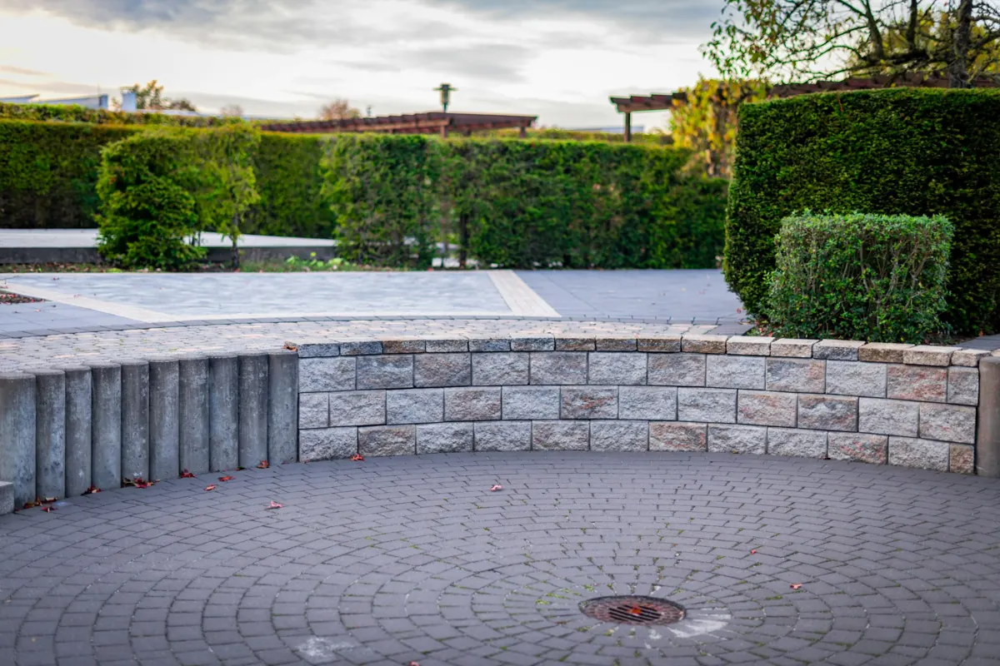
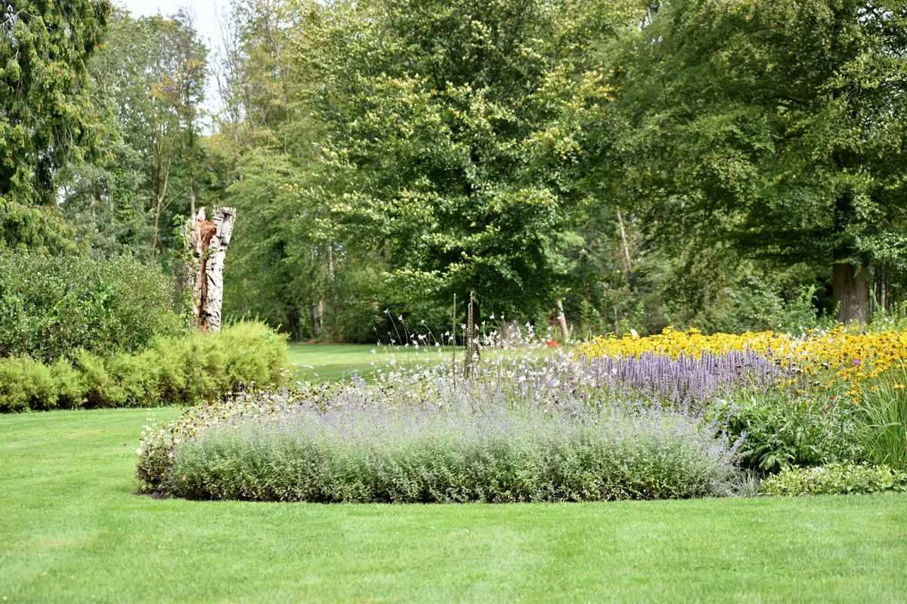
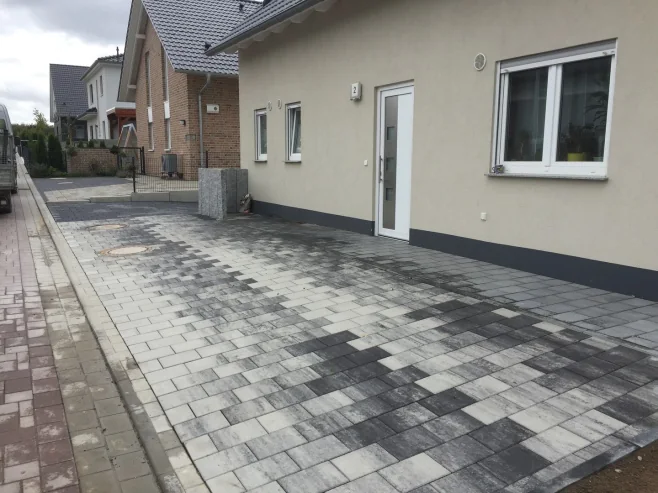
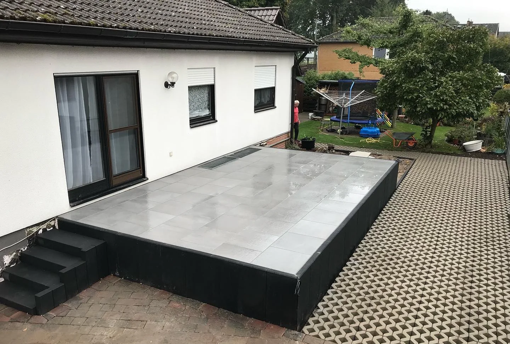
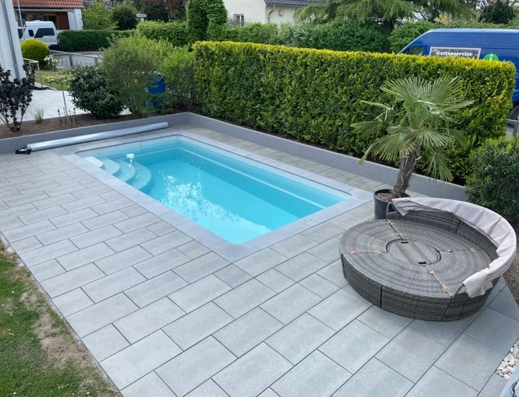
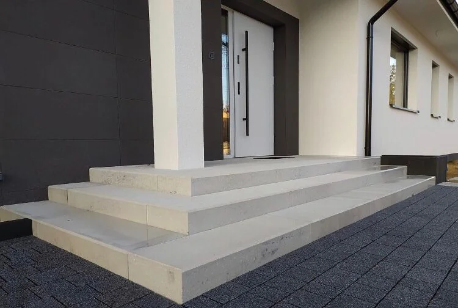
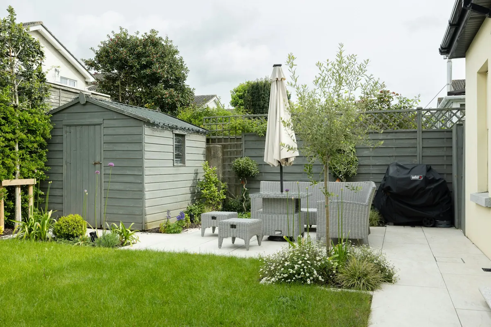
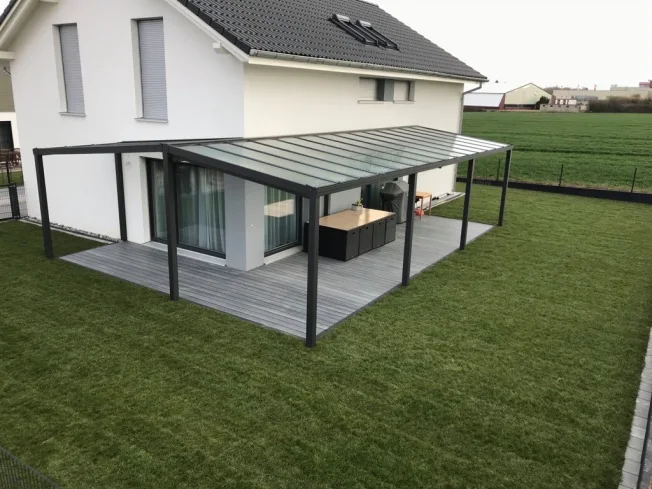

Garten- & Landschaftsbau, der bleibt.
Wir gestalten Gärten, pflastern Einfahrten und bauen Terrassen, Treppen und Zäune – in Sickte, Braunschweig, Wolfenbüttel und der ganzen Umgebung. Persönlich beraten, sauber ausgeführt.
- Seit 2007Erfahrung im Garten- und Landschaftsbau
- Vor OrtPersönliche Beratung bei Ihnen
- Aus einer HandPlanung, Bau und Pflege
Alles für Ihre Außenanlage – aus einer Hand
Von der Neuanlage bis zur laufenden Pflege: Sie haben einen Ansprechpartner für das gesamte Grundstück.

01Gartengestaltung
Neuanlage und Umgestaltung – vom ersten Spatenstich bis zum fertigen Garten.

02Pflasterarbeiten
Einfahrten, Höfe und Wege, die tragen, entwässern und gut aussehen.

03Terrassen & Treppen
Terrassen, Sitzplätze, Stufen und Eingänge aus Stein und Platten.
 04
04Gartenpflege
Regelmäßige Pflege für Privatgärten, Wohnanlagen und Gewerbeobjekte.
 05
05Zaunbau
Zäune, Tore und Sichtschutz – sauber gesetzt und dauerhaft stabil.
06Winterdienst
Räumen und Streuen – schnell, zuverlässig und sicher.

Ein Familienbetrieb, der zu seinem Wort steht
Seit 2007 legen wir Gärten neu an, gestalten Hausgärten um und pflegen Grünanlagen. Qualität und ein gutes Miteinander im Team sind uns dabei genauso wichtig wie ein fairer Preis.
- Persönliche Beratung bei Ihnen vor Ort
- Individuelle Kalkulation für Ihr Vorhaben
- Eigene Maschinen und fachgerechte Ausrüstung
- Betreuung auch nach der Fertigstellung
In vier Schritten zu Ihrer neuen Außenanlage
Offene Kommunikation gehört für uns dazu: Sie wissen vor, während und nach dem Projekt, woran Sie sind.
- 01
Anfrage
Sie rufen an, schreiben per WhatsApp oder nutzen das Formular. Ein paar Sätze zu Ihrem Vorhaben genügen.
- 02
Termin vor Ort
Wir schauen uns Grundstück und Gegebenheiten gemeinsam an und besprechen Ihre Wünsche in Ruhe.
- 03
Angebot
Sie erhalten eine individuelle Kalkulation für Ihr Vorhaben – nachvollziehbar und ohne Überraschungen.
- 04
Ausführung
Wir setzen das Projekt mit eigenem Team und eigenen Maschinen um und bleiben dabei Ihr Ansprechpartner.
Arbeiten, die für sich sprechen
Ein Auszug aus Projekten, die wir für unsere Kunden umgesetzt haben.
Alle Referenzen ansehen






Der einfachste Weg, seinen Garten zu lieben.
Sie sagen uns, wie Sie draußen leben möchten. Wir kümmern uns um alles andere – von der ersten Idee bis zur laufenden Pflege.
Warum Kunden sich für Jaszewski entscheiden
Beratung vor Ort
Wir kommen zu Ihnen, hören zu und entwickeln die Lösung gemeinsam mit Ihnen am Grundstück.
Individuelle Kalkulation
Sie erhalten ein Angebot, das zu Ihrem Vorhaben passt – verständlich aufgeschlüsselt.
Erfahrenes Team
Eingespielte Leute mit Kompetenz, die seit vielen Jahren zusammen auf der Baustelle stehen.
Eigene Maschinen
Fachgerechte Ausrüstung im eigenen Haus – das spart Zeit und hält die Kosten im Rahmen.
Pflegeservice
Auf Wunsch betreuen wir Ihre Anlage dauerhaft, damit sie auch in Jahren noch Freude macht.
Faires Preis-Leistungs-Verhältnis
Saubere Arbeit zu einem Preis, der in einem gesunden Verhältnis zur Leistung steht.

Zuhause in Sickte, unterwegs in der ganzen Region
Kurze Wege zu Ihnen: Von Sickte aus sind wir schnell in Braunschweig, Wolfenbüttel und den Orten rund um den Elm.
- Sickte
- Braunschweig
- Wolfenbüttel
- Cremlingen
- Königslutter am Elm
- Schöppenstedt
- Veltheim (Ohe)
- Erkerode
- Evessen
- Dettum
- Destedt
- Weddel
Häufige Fragen
In welchen Orten sind Sie tätig?
Unser Betrieb sitzt in Sickte. Von hier aus arbeiten wir in Braunschweig, Wolfenbüttel, Cremlingen, Königslutter, Schöppenstedt und den umliegenden Orten. Liegt Ihr Grundstück etwas weiter entfernt, fragen Sie einfach an.
Wie komme ich zu einem Angebot?
Sie melden sich telefonisch, per WhatsApp oder über das Formular. Wir vereinbaren einen Termin bei Ihnen vor Ort, schauen uns das Vorhaben an und kalkulieren individuell – bevor irgendwelche Arbeiten beginnen.
Übernehmen Sie auch einzelne, kleinere Arbeiten?
Ja. Wir bauen komplette Außenanlagen, aber genauso eine einzelne Eingangstreppe, eine neue Einfahrt oder einen Zaun. Sprechen Sie uns auf Ihr Vorhaben an.
Kann ich die Pflege nach der Neuanlage ebenfalls bei Ihnen beauftragen?
Gern. Unser Pflegeservice betreut Gärten und Grünanlagen auch dauerhaft, damit die Anlage so schön bleibt, wie sie übergeben wurde.
Bieten Sie auch Winterdienst an?
Ja, wir räumen und streuen in der kalten Jahreszeit – für Privatgrundstücke ebenso wie für Wohnanlagen und Gewerbeflächen.
Erzählen Sie uns von Ihrem Vorhaben
Am schnellsten geht es per Telefon oder WhatsApp. Wir melden uns zurück, vereinbaren einen Termin bei Ihnen vor Ort und erstellen Ihnen ein individuelles Angebot.